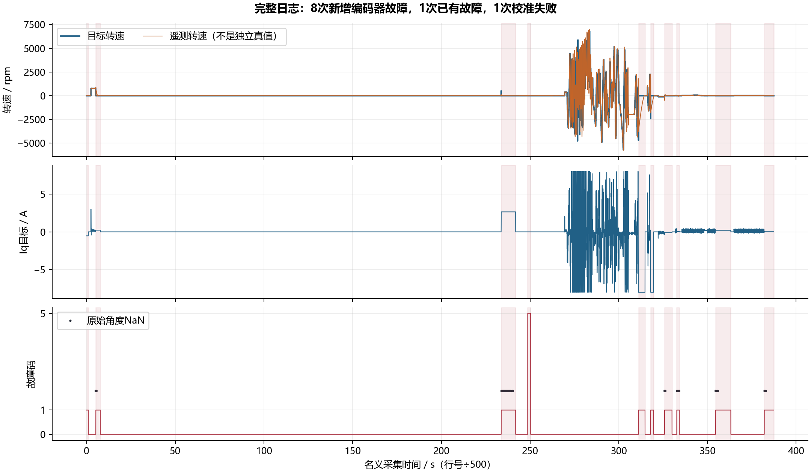
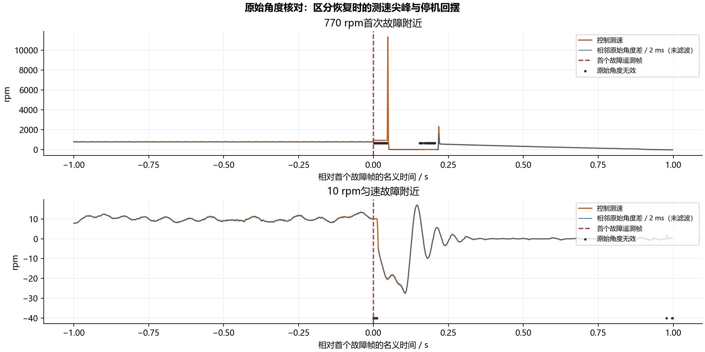
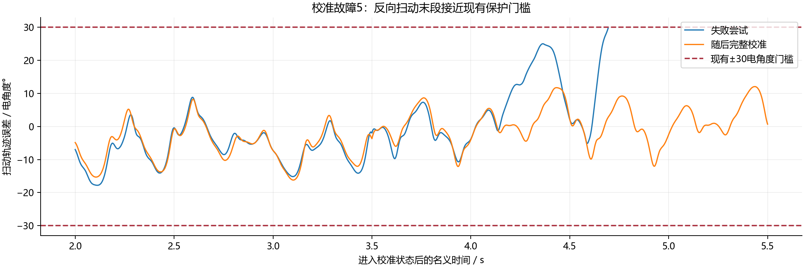

bb14305：反复故障，究竟是哪一层出了问题？
原始日志、保护代码、真实 C 模块复现和停机实机读数的逐项核对。下面明确区分故障触发原因、故障后产生的测速错误，以及后来擦除 Flash 引起的校准丢失。
编码器丢帧后恢复，代码把缺失期间的累计角度当作一个 50 μs 增量，产生虚假速度尖峰。本轮已修复并烧录。但这发生在数据失效之后，不能拿它解释编码器为什么第一次失效。当前证据不足以把所有故障判定为硬件欠压，也不足以宣称反复故障已经解决。
1. 这份日志发生了什么
文件 D:\Downloads\bb14305尝试修复报错.csv 共 193,702 帧，全部按当前固定 20 通道解释。名义时长 387.404 s。文件开头已经锁存一次编码器故障；后面新增 8 次编码器故障（码 1），另有 1 次校准失败（码 5）。连续显示故障的每一行不算一次新的故障。

| 起始行* | 名义时间 / s | 故障码 | 此前目标 / rpm | 此前反馈 / rpm | 此前 Iq目标 / A | 区间内角度 NaN 帧 | 锁存时长 / s |
|---|---|---|---|---|---|---|---|
| 0 | 0.000 | 1 | 文件开始时已有 | — | — | 0 | 0.992 |
| 2599 | 5.198 | 1 | 770 | 762.973 | 0.116295 | 44 | 2.546 |
| 116860 | 233.720 | 1 | 520 | 111.133 | 2.639999 | 2564 | 8.130 |
| 124324 | 248.648 | 5 | 0 | -0.008 | 0.000000 | 0 | 1.652 |
| 155567 | 311.134 | 1 | -4710 | -3740.702 | -8.000000 | 0 | 3.652 |
| 158987 | 317.974 | 1 | -2410 | -1793.969 | -8.000000 | 0 | 1.662 |
| 162897 | 325.794 | 1 | -110 | -111.613 | -0.119165 | 52 | 4.194 |
| 166341 | 332.682 | 1 | 20 | 20.090 | -0.008237 | 272 | 1.458 |
| 177299 | 354.598 | 1 | 10 | 9.956 | 0.211921 | 10 | 8.562 |
| 191013 | 382.026 | 1 | 20 | 19.660 | 0.016566 | 4 | 5.378 |
*数据行从 0 开始，不含表头。“此前”是第一个故障遥测帧的上一行，不是 20 kHz 路径触发前的最后一次采样。开头一段没有故障前数据。锁存时长不等于传感器异常持续时间。
故障也发生在小电流匀速状态。10 rpm、20 rpm 工况下，前一帧的电流目标分别可低至约 0.212 A、0.008 A 和 0.017 A。因此，把全部故障归结为“大反转、电流太大”没有数据依据。另两次高速负转速工况的目标已达到 −8 A，属于不同的工作条件，不能混为一谈。
原始角度共缺失 2,946 帧。最长连续缺失为 5.084 s，在第 116,931～119,472 行，此时已经进入故障、功率关闭。这说明异常并不限于某一个瞬时转矩指令。数据路径或传感器为什么持续失效，仍需触发时的 SPI 现场。
这份 CSV 中零偏失败位、BSP/编码器时序来源、发送丢帧计数均为 0；B/C 零偏标准差一直为 3.535 / 3.782 mV，均值为 1.660885 / 1.680637 V。因此这些运行故障不是该日志中的零偏或已报告的控制时序故障。低速显示结果也不能代替原始角度核对。
2. 现在能定位到哪一层
原始 SPI 数据 → CRC / 芯片状态检查 → 原始角度 I8
↓无效 ↓
I8 = NaN 运行时角度跳变检查
└───────────┬────────┘
故障码 1
功率关闭并锁存
↓
停机后继续采集反馈
在被回传到 CSV 的样本中，没有发现“原始角度有限、编码器有效位为 0”的记录；有大量 I8=NaN。这直接说明至少部分故障区间经过了原始读取失败路径，而不只是观测器输出或新增角度跳变判断出错。但 500 Hz 回传每帧跨过 40 次原生采样，不能排除首个触发在两帧之间来自另一条保护路径。
MT6835 的有效性检查包含 CRC，以及过速、弱磁场和欠压三个状态位。故障码 1 没有进一步编码这些原因。不能把上一次读取到的欠压状态，套用到本次的全部 8 次故障。本轮读取期间用户重启并擦除过 Flash，旧的首异常 SRAM 已丢失；随后读到的零值不代表原故障没有发生。
源码比较确认：bb14305 没有收紧 CRC、状态位和角度跳变阈值。当前 CRC/状态检查逻辑在 3f59f51 时已经存在；运行时单步 5.16° 跳变保护在 60e305b 中已经存在。SPI3 仍为 mode 3、10.5 MHz。这个比较排除了“bb14305 新增更严阈值”的解释，但不能据此排除软件时序、通信实现或更早改动的影响。

3. 确认的软件错误：丢帧恢复的时间基准
旧逻辑只在有效样本时更新 previous。编码器连续失效 5 ms 后，下一个角度和上一个有效角度隔了 5.05 ms，代码却仍把两者之差交给固定 50 μs 的测速和 PLL。因此一次恢复可造成明显的虚假速度跃升。上一轮 bb14305 隔离了无效样本自身，却漏掉了这个恢复边界。
| 真实 C 模块复现 | 修复前 | 本轮修复后 |
|---|---|---|
| 输入：原始角度持续按 770 rpm 变化，中间缺失 5 ms | 实际编译 foc.c 和 control.c；硬件输入由临时主机程序提供 | |
| 缺失前 PLL 输出 / rpm | 757.041 | 757.041 |
| 恢复首样本后的 PLL 输出 / rpm | 1518.97 | 757.12 |
| 恢复首样本后的原有 FOC 测速 / rpm | 1521.11 | 759.265 |
输入角度含现有固件的 0.52° 二次谐波修正，输出不等于 770 的小偏差是这个复现设置的一部分。这里验收的是“丢帧恢复是否新增巨大跃升”，不是宣称测速绝对误差已经消除；这是软件复现结果，不是本轮电机在 770 rpm 的实测。
修复前：有效角度差 Δθ → 按一个 50 μs 增量输入测速
修复后：有效角度差 Δθ、实际间隔 Δt
→ 测速增量 = Δθ × 50 μs / Δt
→ 位置累计仍使用实际 Δθ
→ 无效输入仍触发原有保护
实现仅新增一个上次有效采样时间戳。已有 TIM5 时间戳在采集重启时保持连续，避免保存参数或采集恢复把时间倒退。原始增量不再直接污染测速。单圈编码器在长时间丢失期间若转过半圈以上，不能恢复丢失圈数；修复也不重建缺失期间的真实速度轨迹。当前 24 位时间戳还要求有效采样间隔短于 16.777216 s，超过该范围没有本轮验证保证。
临时 C 检查覆盖 0、0.2、±770、±5000 rpm，缺失 50、100、500、1000、5000 μs，以及时间戳回绕，共 60 组通过。另一个检查确认 20° 异常角度不进入 PLL 或位置累计。临时注入代码不编入正式固件。
诊断同时修正：只有用户的 clear 被接受时，才重置已有 mt6835_first_error，让下一次故障保留新的首异常；此前它可能一直指向本次上电最早的另一场故障。没有增加常驻遥测通道或额外采样任务。
4. 校准失败发生在反向扫动途中
第 121,976～124,323 行对应一次 4.696 s 的校准，随后故障码为 5。根据原始角度、现有 0.52° 修正和 7 对极重建，失败前最后一个遥测点的轨迹误差约 29.707 电角度，已接近固件的 30° 门槛。它处于反向扫动区间，支持轨迹跟随检查触发；500 Hz 数据不能给出精确的 20 kHz 越界样本。

随后第 128,751～131,750 行完成了 6 s 校准并恢复校准有效标志。失败尝试不是启动静止检查失败，也不是零偏噪声故障；没有证据支持通过放宽校准门槛解决它。
5. 后来的重启和 Flash 擦除是另一组事件
13:13 的完整 Flash 备份包含两份校验有效的 v3 参数记录，世代号为 3 和 2，速度 PI 均为用户设定的 0.008 / 0.15。读取过程中命令计数从 413 变为 0；用户确认先重启，随后明确说明同时擦除过 Flash。擦除后校准无效与这一操作一致，普通复位本身不会擦除参数。
新上电 SRAM 中还捕获到一次独立的启动零偏故障：B/C 标准差约 3.833 / 4.039 mV，原因位为 8，即 C 路噪声超过 4 mV。原始 CSV 中没有这一次故障。后来重新采样降至门槛内，只能说明存在跨越门槛的窗口，不能证明噪声问题被消除。
已恢复本轮备份中的整个 256 KiB 参数和校准区。编程校验通过；停机、暂停 CPU 后回读，与备份逐字节相同。运行中 HOTPLUG 批量上传曾在空白区出现 336 个不一致字节，暂停后回读全部消失，因此该运行中上传不用于完整性判断。今后故障现场应先确认停机，再暂停 CPU 取一致快照。
6. 本轮实际交付与验收边界
| 项目 | 本轮结果 |
|---|---|
| Debug / Release | 构建通过 |
| 丢帧恢复与保护检查 | 60 组恢复检查通过；角度跳变隔离通过 |
| 正式固件 | Release 已烧录，编程器校验通过；固定 20 通道 / 500 Hz / 84 字节 |
| 参数与校准 | 本轮备份已恢复；停核回读整区一致；0.008 / 0.15 保留 |
| 停机链路 | stop 已确认；最终 state=0、fault=0、power_on=0、calibrated=1 |
| 停机诊断 | ADC、编码器、BSP 时序和 UART 错误计数均为 0；采样处理观测最大 3598 周期，约 21.42 μs，仅代表本轮停机路径 |
| 转动验收 | 未执行；本轮主动通电运行 0 s，不能宣称反复故障、低速丝滑或高速指标通过 |
实机操作约 13:07～13:51，共 44 分钟；后续为离线作图与记录整理。电池母线仍约 23.87 V，关闭的是电机功率输出；没有把功率关闭写成电池已断开。没有遗留自动测试和采集任务。
下一项有判别力的工作是保存下一次故障自己的首个 SPI 原始字节、CRC 和状态位，再决定修复通信软件还是检查具体供电/传感器条件。保存前继续复位、全片擦除或 clear 都会丢掉关键证据。单凭这份 CSV 再调 PI、换 PLL 或放宽保护，不能解释首个异常。
7. 数据与可复核来源
- 故障区间、原始文件哈希和无效角度统计
- 60 组真实 C 恢复检查结果
- 用户重启后 SRAM 诊断（不代表旧故障）
- 烧录、参数恢复和停机诊断 · 最终 stop 回传
- MT6835 官方数据手册 Rev.1.3：状态位、CRC 和 SPI 格式
原始 CSV SHA256：73c2ceb70b136ad7f9975387edf685ec81ecac0c3631536c9b348ab7f8ef9262
已烧录 Release SHA256：ba08eb4cecefef7e281c1e09973bfe213da8c8684ff97a8938d40a8b419813e1
恢复后参数区 SHA256：4c42b4addb5f00139fb1b3d394466c57166e72d2ccf6eaf4839cc427058c38c6
原始日志副本、固件、参数备份、临时复现程序和采集记录保存在 E:\405_FOC\405_FOC\build\bench_debug\20261003_130720。原始下载文件未改动。